BIENVENIDOS A TU BUSCADOR
La carrera que eligas sera tu futuro, la universidad tu segundo hogar. Por eso debes pensar bien para escoger bien... ¡El exito esta en tus manos!
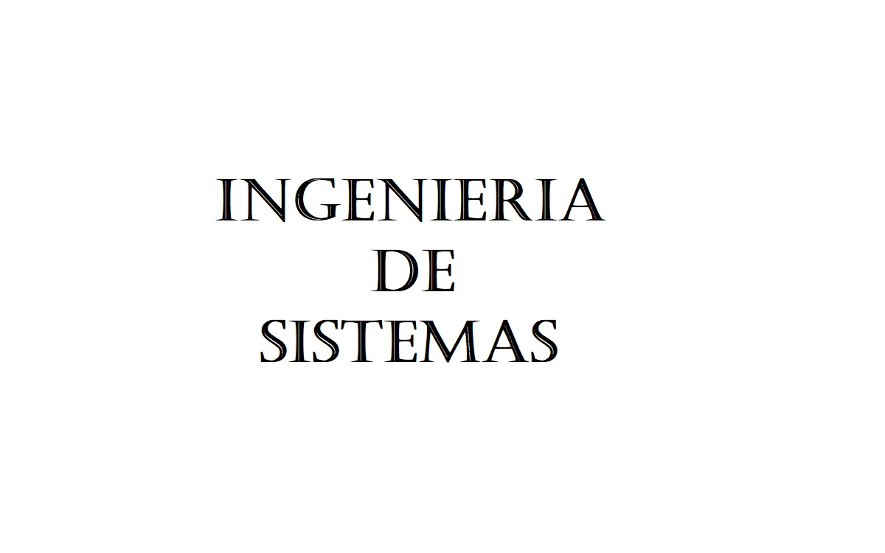
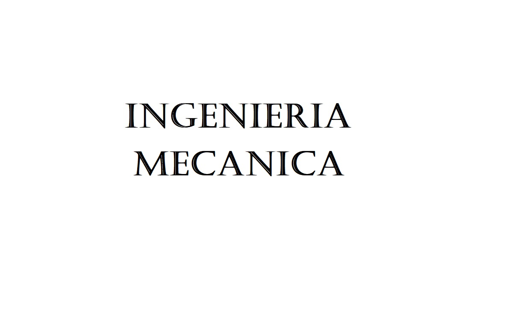
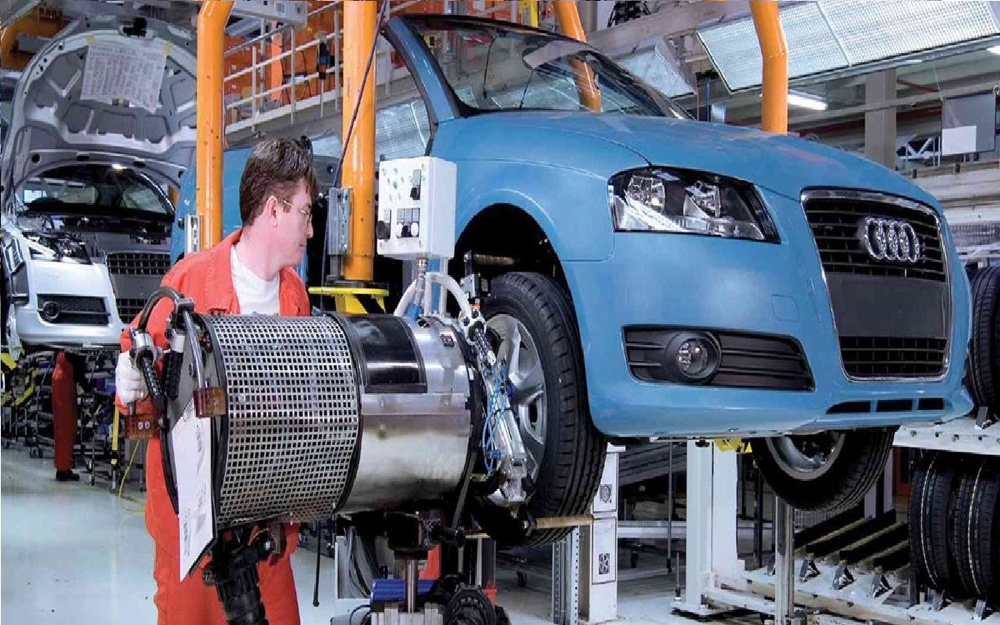
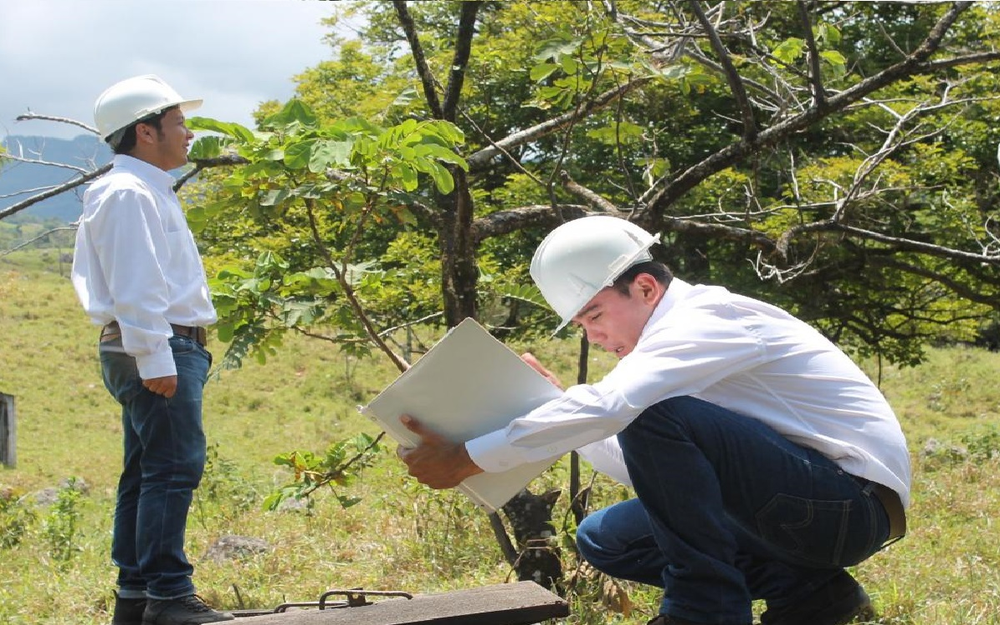
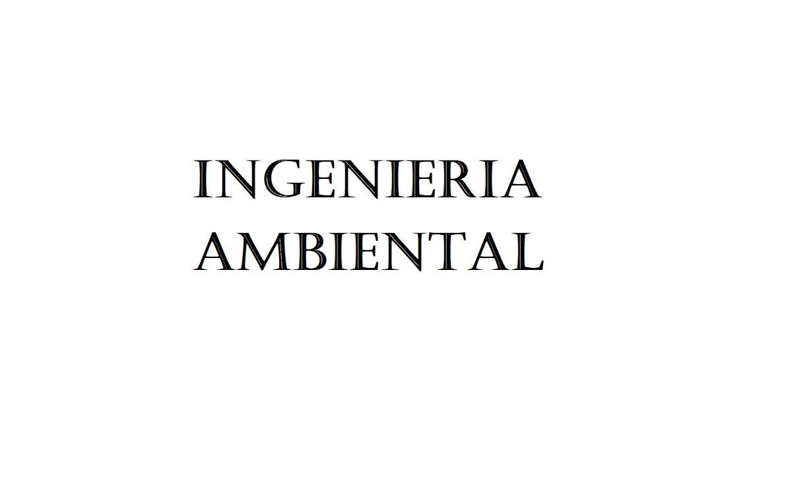
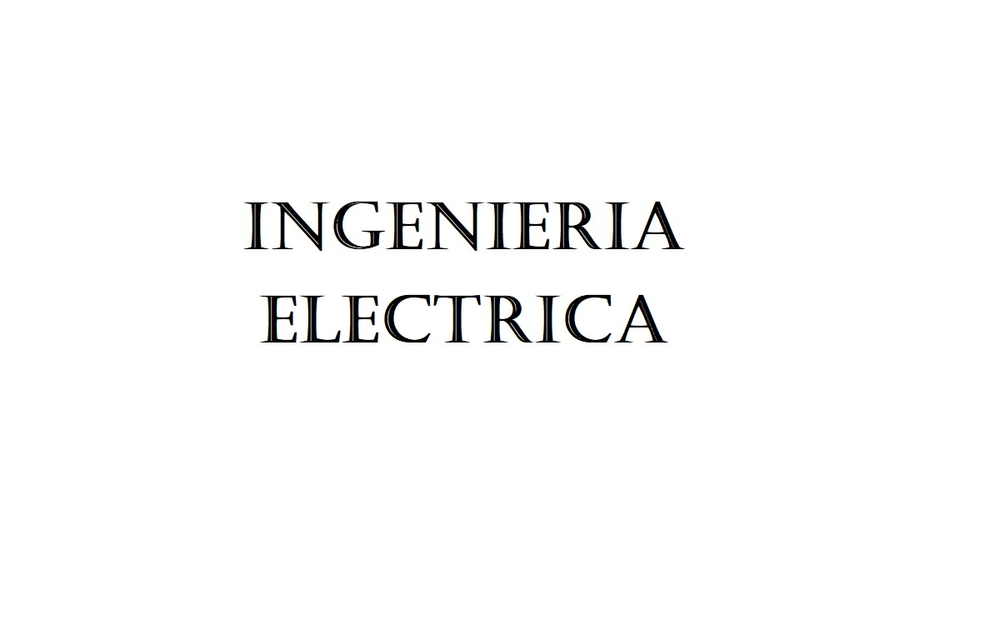
 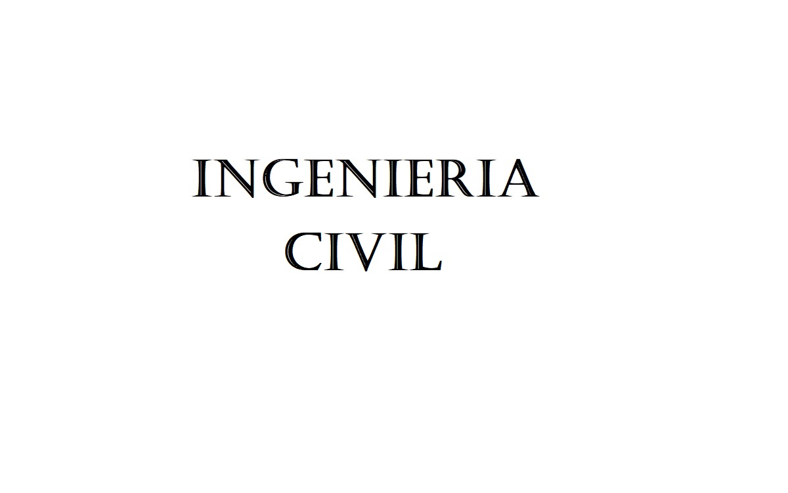
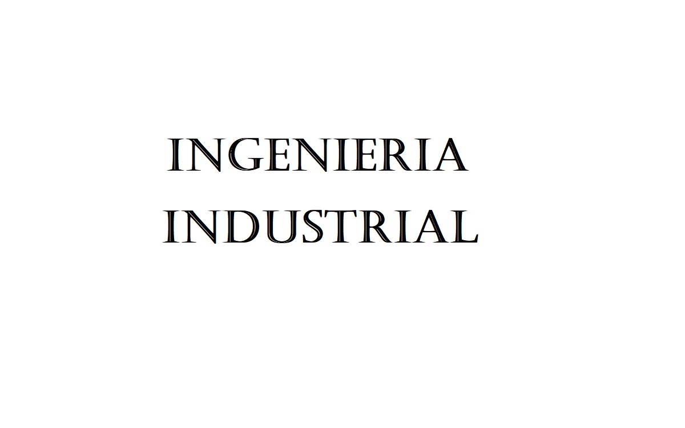
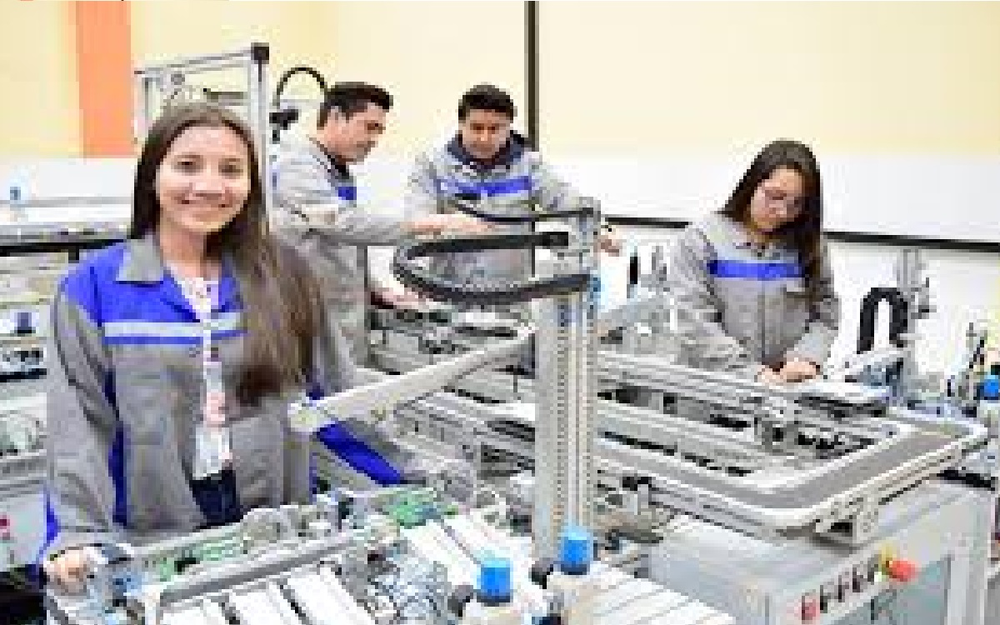
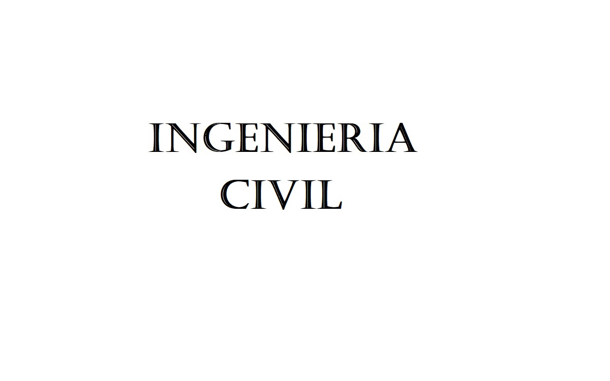
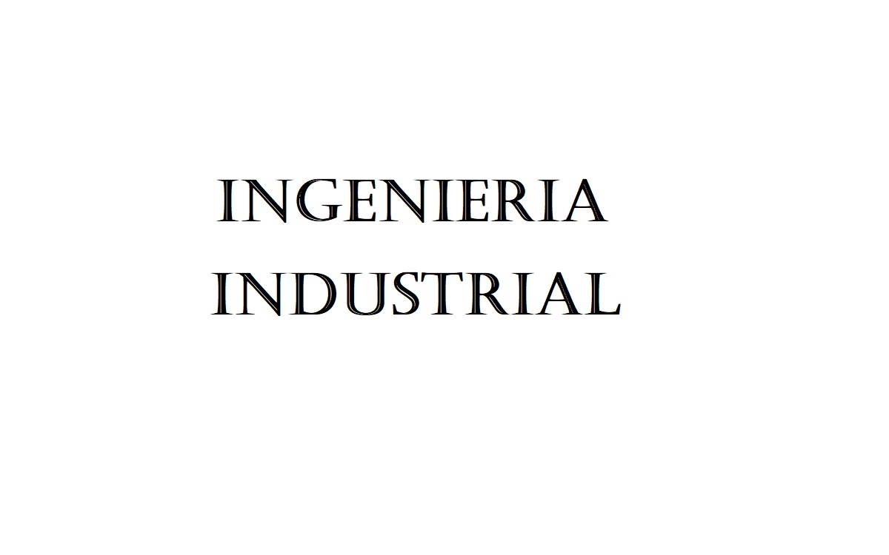
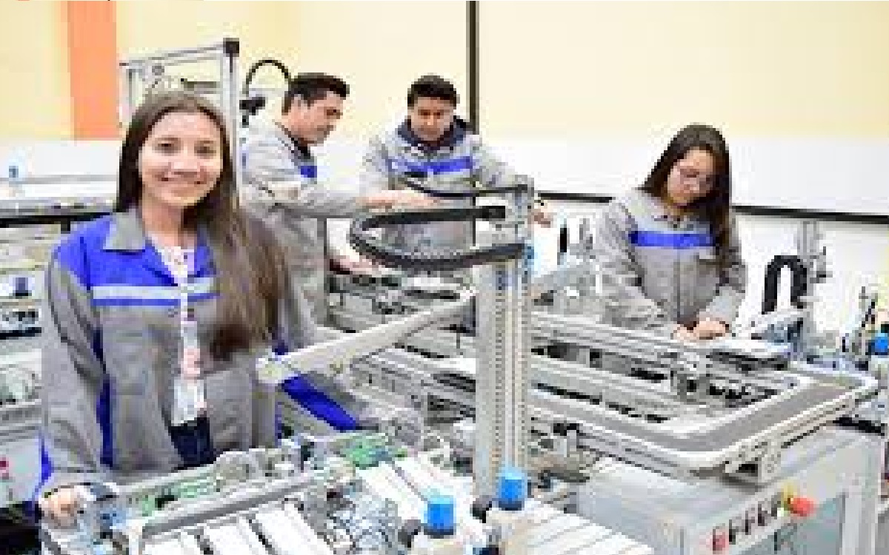
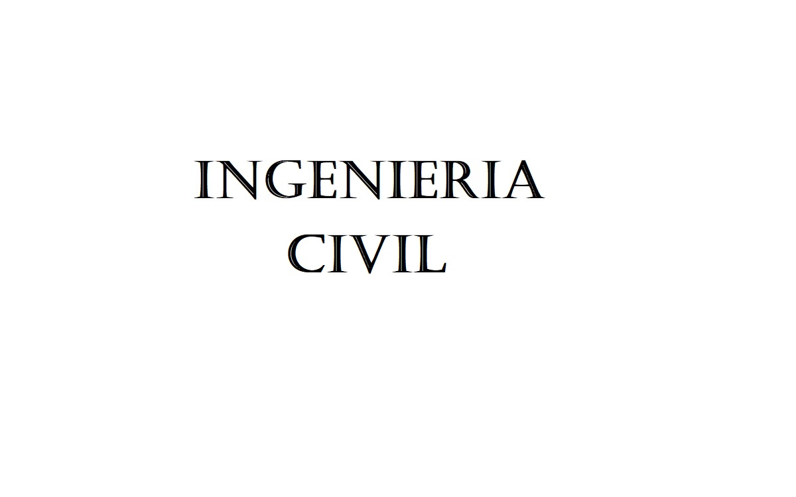
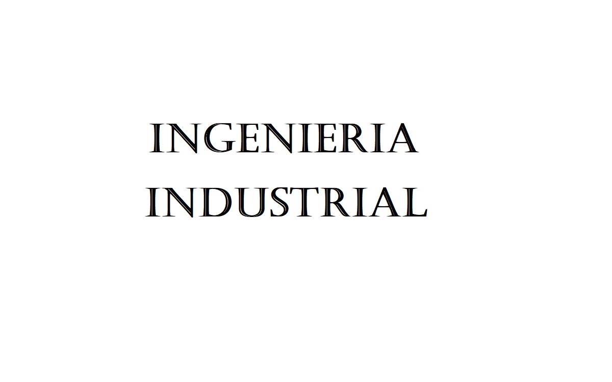
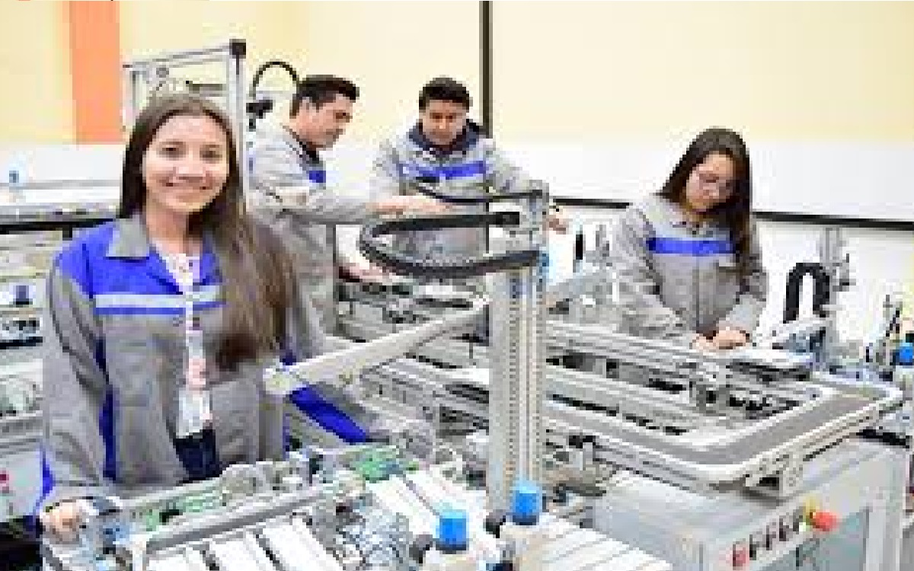
| Universidad | Costo | Acreditacion | Mas Información |
|---|---|---|---|
| Universidad Libre | $5.163.000 | Alta Calidad | |
| Universidad de los Andes | $16.344.000 | Alta Calidad | |
| Sergio Arboleda | $6.690.000 | Alta Calidad | |
| Escuela Julio Garavito | Segun estudio | Alta Calidad | |
| Universidad de la sabana | $10.550.000 | Alta Calidad | |
| Universidad EAN | 5.922.000 | Alta Calidad | |
| Universidad Santo Tomas | $4.915.000 | Alta Acreditacion | |
| Politecnico Gran Colombiano | $4.814.000 | Sin Acreditacion | |
| Universidad Manuela Beltran | $5.513.000 | Sin Acreditacion | |
| Universidad Central | $4.176.000 | Sin Acreditacion | |
| Funacion Universitaria Konrad Lorenz | $4.070.000 | Sin Acreditación | |
| Universidad Antonio Nariño | $5.376.000 | Sin Acreditación | |
| Corporacion Univesitaria Minuto de Dios | $4.300.000 | Sin Acreditación | |
| Universidad Catolica de Colombia | $4.452.000 | Sin Acreditación |
| Universidad | Costo | Acreditacion | Mas Información |
|---|---|---|---|
| Universidad Libre | $5.163.000 | Alta Calidad | |
| Universidad de los Andes | $16.344.000 | Alta Calidad | |
| Universidad de la Sabana | $10.950.000 | Alta Calidad | |
| Escuela Colombiana de Ingenieria Julio Garavito | $Segun Estudio | Alta Calidad | |
| Universidad Santo Tomas | $4.915.000 | Alta Calidad | |
| Universidad Antonio Nariño | $5.331.000 | Sin Acreditación | |
| Fundacion Universitaria de America | $4.663.000 | Sin Acreditación | |
| Universidad Central | $4.170.000 | Sin Acreditación |
| Universidad | Costo | Acreditacion | Mas Información |
|---|---|---|---|
| Universidad Libre | $5.163.000 | Alta Calidad | |
| Universidad de los Andes | $16.344.000 | Alta Calidad | |
| Escuela Colombiana de Ingenieria Julio Garavito | Segun Estudio | Alta Calidad | |
| Universidad EAN | $5.922.000 | Alta Calidad | |
| Universidad Sergio Arboleda | $7.000.000 | Alta Calidad | |
| Universidad Santo Tomas | $4.962.000 | Alta Calidad | |
| Universidad central | $3.810.000 | Sin Acreditación | |
| Universidad Manuela Beltran | $5.513.000 | Sin Acreditación | |
| Universidad Antonio Nariño | $5.380.000 | Sin Acreditación |
| Universidad | Costo | Acreditacion | Mas Información |
|---|---|---|---|
| Universidad de los Andes | $16.344.000 | Alta Calidad | |
| Escuela de Ingenieria Julio Garavito | Segun Estudio | Alta Calidad | |
| Univesidad Sergio Arboleda | $6.690.000 | Alta Calidad | |
| Universidad Antonio Nariño | $5.376.000 | Sin Acreditación | |
| Universidad Central | $3.766.200 | Sin Acreditación |
| Universidad | Costo | Acreditacion | Mas Información |
|---|---|---|---|
| Universidad de los Andes | $16.344.000 | Alta Calidad | |
| Escuela de Ingenieria Julio Garavito | Segun Estudio | Alta Calidad | |
| Universidad Libre | $3.763.000 | Alta Calidad | |
| Univesidad santo tomas | $4.915.000 | Alta Calidad | |
| Universidad Antonio Nariño | $5.407.000 | Sin Acreditación | |
| Corporación Universitaria Minuto de Dios | $3.477.000 | Sin Acreditación |
| Universidad | Costo | Acreditacion | Mas Información |
|---|---|---|---|
| Universidad Libre | $5.163.000 | Alta Calidad | |
| Universidad de los Andes | $16.344.000 | Alta Calidad | |
| Universidad de la sabana | $10.550.000 | Alta Calidad | |
| Universidad Santo Tomas | $4.970.000 | Alta Calidad | |
| Universidad Sergio Arboleda | $6.690.000 | Alta Calidad | |
| Escuela Colombian de Ingenieria Julio Garavito | Segun Estudio | Alta Calidad | |
| Politecnico Gran Colombiano | $4.814.000 | Sin Acreditación | |
| Universidad Antonio Nariño | $5.830.000 | Sin Acreditación | |
| Universidad Manuela Beltran | $5.513.000 | Sin Acreditación | |
| Universidad Agustiniana | $3.993.000 | Alta Caliadd | |
| Universidad Central | $3.808.000 | Sin Acreditación | |
| Universidad Catolica de Colombia | $4.863.000 | Sin Acreditación | |
| Fundacion Universitaria Konrad Lorenz | $4.070.000 | Sin Acreditación | |
| Fundacion universidad america | $4.663.000 | Sin Acreditación |
"Los científicos estudian el mundo tal como es; los ingenieros crean el mundo que nunca ha sido"... Theodore Von Karman
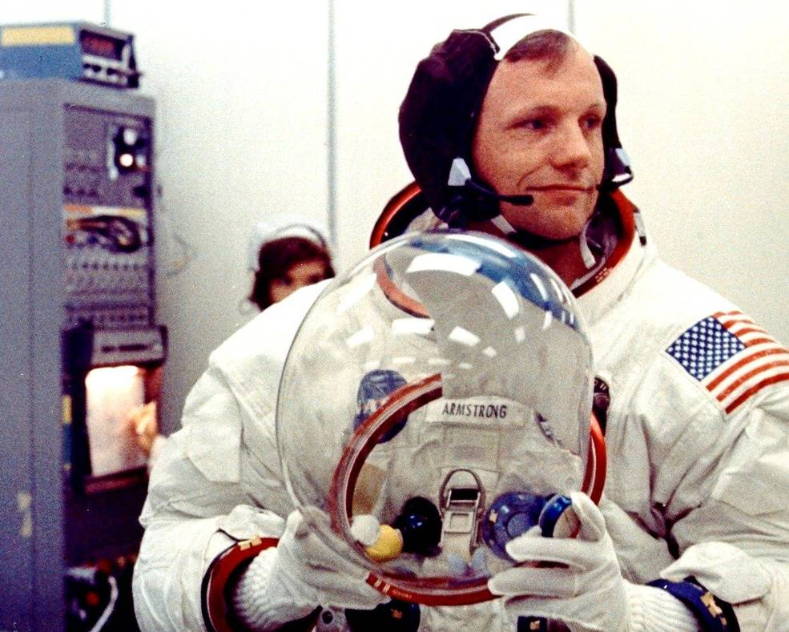